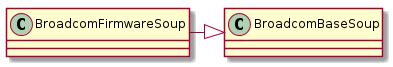
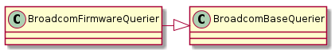

This is a module for getting information from the firmware.asp page.
# python standard library
import re
# third-party
from bs4 import BeautifulSoup
# this package
from apcommand.accesspoints.broadcom.parser import BroadcomBaseSoup
from apcommand.accesspoints.broadcom.commons import BroadcomPages
from apcommand.accesspoints.broadcom.querier import BroadcomBaseQuerier
Using the stuff from Firmware Exploration, a Soup for the information will be created.

BroadcomFirmwareSoup(*args, **kwargs) |
A soup to get the firmware information |
BroadcomFirmwareSoup.bootloader_version |
returns the bootloader version |
BroadcomFirmwareSoup.os_version |
Return the OS version |
BroadcomFirmwareSoup.wl_driver_version |
return the WL Driver Version |
Now a querier to bundle the Soup with a connection

BroadcomFirmwareQuerier(*args, **kwargs) |
A querier for the firmware.asp page |